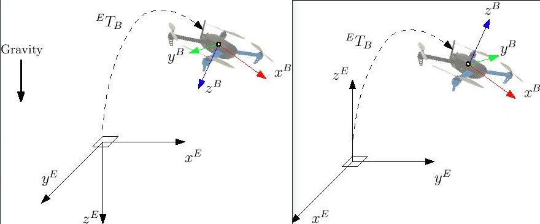

Using Vision or Motion Capture Systems for Position Estimation
Visual Inertial Odometry (VIO) and and Motion Capture (MoCap) systems allow vehicles to navigate when a global position source is unavailable or unreliable (e.g. indoors, or when flying under a bridge. etc.).
Both VIO and MoCap determine a vehicle's pose (position and attitude) from "visual" information. The main difference between them is the frame perspective:
- VIO uses onboard sensors to get pose data from the vehicle's perspective (see egomotion).
- MoCap uses a system of off-board cameras to get vehicle pose data in a 3D space (i.e. it is an external system that tells the vehicle its pose).
Pose data from either type of system can be used to update a PX4-based autopilot's local position estimate (relative to the local origin) and also can optionally also be fused into the vehicle attitude estimation.
This topic explains how to configure a PX4-based system to get data from MoCap/VIO systems (either via ROS or some other MAVLink system) and more specifically how to set up MoCap systems like VICON and Optitrack, and vision-based estimation systems like ROVIO, SVO and PTAM).
The instructions differ depending on whether you are using the EKF2 or LPE estimator.
PX4 MAVLink Integration
PX4 uses the following MAVLink messages for getting external position information, and maps them to uORB topics:
| MAVLink | uORB |
|---|---|
| VISION_POSITION_ESTIMATE | vehicle_visual_odometry |
ODOMETRY (frame_id = MAV_FRAME_VISION_NED) |
vehicle_visual_odometry |
| ATT_POS_MOCAP | vehicle_mocap_odometry |
ODOMETRY (frame_id = MAV_FRAME_MOCAP_NED) |
vehicle_mocap_odometry |
EKF2 only subscribes to vehicle_visual_odometry topics and can hence only process the first two messages
(a MoCap system must generate these messages to work with EKF2).
The LPE estimator subscribes to both topics, and can hence process all the above messages.
EFK2 is the default estimator used by PX4. It is better tested and supported than LPE, and should be used by preference.
The messages should be streamed at between 30Hz (if containing covariances) and 50 Hz.
The following MAVLink "vision" messages are not currently supported by PX4: GLOBAL_VISION_POSITION_ESTIMATE, VISION_SPEED_ESTIMATE, VICON_POSITION_ESTIMATE
Reference Frames
PX4 uses FRD (X Forward, Y Right and Z Down) for the local body frame, and NED (X North, Y East, Z Down) for the local world frame - set in MAVLink using MAV_FRAME_BODY_OFFSET_NED and MAV_FRAME_LOCAL_NED, respectively.
Depending on your source your source system reference frame you will need to apply a custom transformation to obtain the appropriate NED convention when sending the MAVLink Vision/MoCap messages.
ROS users can find more detailed instructions below in Reference Frames and ROS.
For example, if using the Optitrack framework the local frame has and on the horizontal plane (x front and z right) while y axis is vertical and pointing up. A simple trick is swapping axis in order to obtained NED convention.
If x_{mav}, y_{mav} and z_{mav} are the coordinates that are sent through MAVLink as position feedback, then we obtain:
x_{mav} = x_{mocap}
y_{mav} = z_{mocap}
z_{mav} = - y_{mocap}
Regarding the orientation, keep the scalar part w of the quaternion the same and swap the vector part x, y and z in the same way. You can apply this trick with every system - if you need to obtain a NED frame, look at your MoCap output and swap axis accordingly.
EKF2 Tuning/Configuration
The following parameters must be set to use external position information with EKF2 (these can be set in QGroundControl > Vehicle Setup > Parameters > EKF2).
| Parameter | Setting for External Position Estimation |
|---|---|
| EKF2_AID_MASK | Set vision position fusion and vision yaw fusion |
| EKF2_HGT_MODE | Set to Vision to use the vision a primary source for altitude estimation. |
| EKF2_EV_DELAY | Set to the difference between the timestamp of the measurement and the "actual" capture time. For more information see below. |
| EKF2_EV_POS_X, EKF2_EV_POS_Y, EKF2_EV_POS_Z | Set the position of the vision sensor (or MoCap markers) with respect to the robot's body frame. |
Reboot the flight controller in order for parameter changes to take effect.
Tuning EKF2_EV_DELAY
EKF2_EV_DELAY is the Vision Position Estimator delay relative to IMU measurements.
Or in other words, it is the difference between the vision system timestamp and the "actual" capture time that would have been recorded by the IMU clock (the "base clock" for EKF2).
Technically this can be set to 0 if there is correct timestamping (not just arrival time) and timesync (e.g NTP) between MoCap and (for example) ROS computers. In reality, this needs some empirical tuning since delays in the entire MoCap->PX4 chain are very setup-specific. It is rare that a system is setup with an entirely synchronised chain!
A rough estimate of the delay can be obtained from logs by checking the offset between IMU rates and the EV rates:

A plot of external data vs. onboard estimate (as above) can be generated using FlightPlot or similar flight analysis tools.
The value can further be tuned by varying the parameter to find the value that yields the lowest EKF innovations during dynamic maneuvers.
LPE Tuning/Configuration
You will first need to switch to the LPE estimator by setting the SYS_MC_EST_GROUP parameter.
If targeting
px4_fmu-v2hardware you will also need to use a firmware version that includes the LPE module (firmware for other FMU-series hardware includes both LPE and and EKF). The LPE version can be found in the zip file for each PX4 release or it can be built from source using the build commandmake px4_fmu-v2_lpe. See Building the Code for more details.
Enabling External Pose Input
The following parameters must be set to use external position information with LPE (these can be set in QGroundControl > Vehicle Setup > Parameters > Local Position Estimator).
| Parameter | Setting for External Position Estimation |
|---|---|
| LPE_FUSION | Vision integration is enabled if fuse vision position is checked (it is enabled by default). |
| ATT_EXT_HDG_M | Set to 1 or 2 to enable external heading integration. Setting it to 1 will cause vision to be used, while 2 enables MoCap heading use. |
Disabling Barometer Fusion
If a highly accurate altitude is already available from VIO or MoCap information, it may be useful to disable the baro correction in LPE to reduce drift on the Z axis.
This can be done by in QGroundControl by unchecking the fuse baro option in the LPE_FUSION parameter.
Tuning Noise Parameters
If your vision or MoCap data is highly accurate, and you just want the estimator to track it tightly, you should reduce the standard deviation parameters: LPE_VIS_XY and LPE_VIS_Z (for VIO) or LPE_VIC_P (for MoCap). Reducing them will cause the estimator to trust the incoming pose estimate more. You may need to set them lower than the allowed minimum and force-save.
If performance is still poor, try increasing the LPE_PN_V parameter. This will cause the estimator to trust measurements more during velocity estimation.
Working with ROS
ROS is not required for supplying external pose information, but is highly recommended as it already comes with good integrations with VIO and MoCap systems. PX4 must already have been set up as above.
Getting Pose Data Into ROS
VIO and MoCap systems have different ways of obtaining pose data, and have their own setup and topics.
The setup for specific systems is covered below. For other systems consult the vendor setup documentation.
Relaying Pose Data to PX4
MAVROS has plugins to relay a visual estimation from a VIO or MoCap system using the following pipelines:
| ROS | MAVLink | uORB |
|---|---|---|
| /mavros/vision_pose/pose | VISION_POSITION_ESTIMATE | vehicle_visual_odometry |
| /mavros/odometry/odom | ODOMETRY (frame_id = MAV_FRAME_VISION_NED) |
vehicle_visual_odometry |
| /mavros/mocap/pose | ATT_POS_MOCAP | vehicle_mocap_odometry |
| /mavros/odometry/odom | ODOMETRY (frame_id = MAV_FRAME_MOCAP_NED) |
vehicle_mocap_odometry |
You can use any of the above pipelines with LPE.
If you're working with EKF2, only the "vision" pipelines are supported. To use MoCap data with EKF2 you will have to remap the pose topic that you get from MoCap:
- MoCap ROS topics of type
geometry_msgs/PoseStampedorgeometry_msgs/PoseWithCovarianceStampedmust be remapped to/mavros/vision_pose/pose. Thegeometry_msgs/PoseStampedtopic is most common as MoCap doesn't usually have associated covariances to the data. - If you get data through a
nav_msgs/OdometryROS message then you will need to remap it to/mavros/odometry/odom.
Reference Frames and ROS
The local/world and world frames used by ROS and PX4 are different.
| Frame | ROS | PX4 |
|---|---|---|
| Body | FLU (X Forward, Y Left, Z Up), usually named base_link |
FRD (X Forward, Y Right and Z Down) |
| World | ENU (X East, Y North and Z Up), with the naming being odom or map |
NED (X North, Y East, Z Down) |
See REP105: Coordinate Frames for Mobile Platforms for more information about ROS frames.
Both frames are shown in the image below (NED on left/ENU on right).

When using external heading estimation, magnetic North is ignored and faked with a vector corresponding to world x axis (which can be placed freely during Vision/MoCap calibration). Yaw angle is therefore given with respect to local x.
When creating the rigid body in the MoCap software, remember to first align the robot's local x axis with the world x axis otherwise yaw estimation will have an initial offset.
Using MAVROS, this operation is straightforward.
ROS uses ENU frames as convention, therefore position feedback must be provided in ENU.
If you have an Optitrack system you can use mocap_optitrack node which streams the object pose on a ROS topic already in ENU.
With a remapping you can directly publish it on mocap_pose_estimate as it is without any transformation and MAVROS will take care of NED conversions.
Specific System Setups
OptiTrack MoCap
The following steps explain how to feed position estimates from an OptiTrack system to PX4. It is assumed that the MoCap system is calibrated. See this video for a tutorial on the calibration process.
Steps on the Motive MoCap software
- Align your robot's forward direction with the the system +x-axis
- Define a rigid body in the Motive software. Give the robot a name that does not contain spaces, e.g.
robot1instead ofRigidbody 1 - Enable Frame Broadacst and VRPN streaming
- Set the Up axis to be the Z axis (the default is Y)
Getting pose data into ROS
- Install the
vrpn_client_rospackage - You can get each rigid body pose on an individual topic by running
roslaunch vrpn_client_ros sample.launch server:=<mocap machine ip>
If you named the rigidbody as robot1, you will get a topic like /vrpn_client_node/robot1/pose
Relaying/remapping Pose Data
MAVROS provides a plugin to relay pose data published on /mavros/vision_pose/pose to PX4.
Assuming that MAVROS is running, you just need to remap the pose topic that you get from MoCap /vrpn_client_node/<rigid_body_name>/pose directly to /mavros/vision_pose/pose.
Note that there is also a mocap topic that MAVROS provides to feed ATT_POS_MOCAP to PX4, but it is not applicable for EKF2.
However, it is applicable with LPE.
Remapping pose topics is covered above Relaying pose data to PX4 (
/vrpn_client_node/<rigid_body_name>/poseis of typegeometry_msgs/PoseStamped).
Assuming that you have configured EKF2 parameters as described above, PX4 now is set and fusing MoCap data.
You are now set to proceed to the first flight.
First Flight
After setting up one of the (specific) systems described above you should now be ready to test. The instructions below show how to do so for MoCap and VIO systems
MoCap First Flight
Be sure to perform the following checks:
- Before creating the rigid body, align the robot with world x axis.
- Stream over MAVLink and check the MAVLink inspector with QGroundControl, the local pose topic should be in NED.
- Move the robot around by hand and see if the estimated local position is consistent (always in NED).
- Rotate the robot on the vertical axis and check the yaw with the MAVLink inspector.
If those steps are consistent, you can try your first flight.
Put the robot on the ground and start streaming MoCap feedback. Lower your left (throttle) stick and arm the motors.
At this point, with the left stick at the lowest position, switch to position control. You should have a green light. The green light tells you that position feedback is available and position control is now activated.
Put your left stick at the middle, this is the dead zone. With this stick value, the robot maintains its altitude; raising the stick will increase the reference altitude while lowering the value will decrease it. Same for right stick on x and y.
Increase the value of the left stick and the robot will take off, put it back to the middle right after. Check if it is able to keep its position.
If it works, you may want to set up an offboard experiment by sending position-setpoint from a remote ground station.
VIO First Flight
TBD.